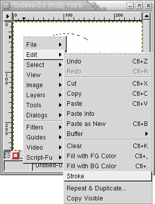
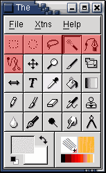
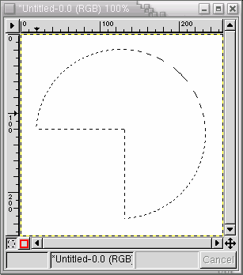
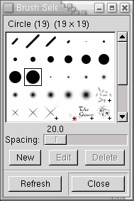
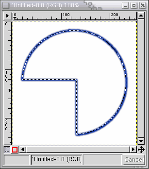
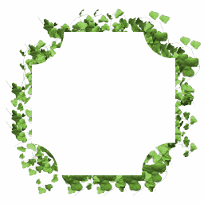
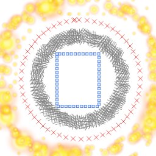

Since Gimp is an image manipulation program and not a painting program it doesn't include tools to draw shapes like squares and circles. However this doesn't mean you can paint them, in fact there are some interesting options regarding this subject when it comes to the gimp. The solution is to use the selection stroking capabilities of the Gimp. This option can be accesed on the image menu (right button click on the image), by going to "Edit->Stroke".

Before doing that however we need to make a selection with the shape we want. There are several ways to make a selection, including all the tools in red shown above and select by color as explained on Selecting and removing one color . When using the tools, holding shift at the beggining of the selection process will add the selection to what is already selected, while holding the control key will substract from it.

Use the selection tools to create a selection with the desired shape.

After you have the selection, choose a brush from the brush selection dialog. Choose also a color and you can play with the spacing option for the brush. Brush selection dialog

When all the options are selected you can finally click on "Edit->Stroke". Using a small brush and selecting a blue color here is the result for the selection made above:
 
Playing around with the spacing options in the brush selection dialog, the color or using one of the animated brushes you can get very interesting results.. here are some examples.